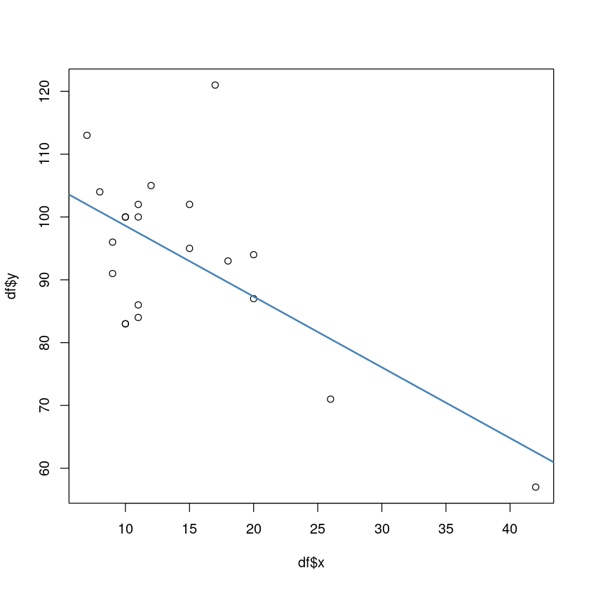

library(ggplot2)이상치
회귀진단
- 오차항의 검토
- 적절한 모형의 선택
- 독립변수들 간의 상관관계 검토
- 지렛대점(leverage point)의 검출
- 이상치(outlier) 화인
- 영향점(influential observation)의 검출
추정된 회귀직선
\[\hat{y} = X(X^\top X)^{-1} X^\top y = Hy\]
H: hat matrix, \(n \times n\) matrix
\(Var(\hat{y}) = \sigma^2 H\)
\(Var(e) = (I_N - H) \sigma^2\)
\(h_{i,j} = x_i^\top (X^\top X) ^{-1} x_j\)
\(h_{ij}\) : H의 대각원소
\(H = X(X^\top X)^{-1} X^\top\)
\(HH = H\)
\(rank(H) = p+1\)
\(tr(H) = \sum^n_{i=1}h_{ii} = p+1\)
\(H\) : 양반정치행렬 positive definite
\(0 \le h_{ii} <1 , -\frac{1}{2} \le h_{ij} \le -\frac{1}{2}\)
\(p=1, h_{ii} = \frac{1}{n} + \frac{(x_{u} - \bar{x})^2}{S_{xx}}\)
\(p>1, h_{ii} = \frac{1}{n} + (x_i - \bar{x})^\top (X^\top X)^{-1} (x_i - \bar{x})\)
지렛대점(leverage point)
\(h_{ii} > s\bar{h}\) 이면, i번째 관측치가 leverage point로 고려 가능
\[\bar{h} = \frac{1}{n} \sum^n_{i=1}h_{ii} = \frac{p+1}{n}\]
잔차(Residual)
\(e = y − \hat{y} = y − X \hat{\beta}\)
\(= y − X(X^\top X)^{-1} X^\top y\)
\(= (In − X(X^\to X)^{-1}X^\to )y = (I_n − H)y\)
\(E(e) = 0_n, Var(e) = (I_n − H)σ^2\)
\(E(e_i) = 0, Var(e_i) = (1 − h_{ii})σ^2\)
\(Cov(e_i,e_j) = −h_{ij} σ^2\)
\(ρ_{ij} = \frac{−h_{ij} σ^2}{ \sqrt{(1 − h_{ii})(1 − h_{jj})σ^4} }=\frac{ −h_{ij}}{\sqrt{(1 − h_{ii})(1 − h_{jj})}}\)
표준화잔차(standardized residual)
\(y \sim N(Xβ,I_nσ^2)\)
\(e \sim N(0_n,(I_n−H)σ^2)\)
\(e_i \sim N(0,(1−h_{ii})σ^2)\)
\(\star \frac{e_i}{\sigma\sqrt{1-h_{ii}}} \sim N(0,1)\)
내적 스튜던트화 잔차(internally studentized residual)
\(r_i = \frac{e_i}{\hat{\sigma}\sqrt{1−h_{ii}}}\)
\(\hat{\sigma}^2 = MSE\)
이러한 표준화 잔차에 대한 표본분포는 분자와 분모가 서로 독립이 아니기 때문에 \(t\) 분포로 근사할 수 없는데, \(|e_i|\)가 큰 경우, \(s\)도 역시 커지게 되기 때문이다.
외적 스튜던트화 잔차(externally studentized residual)
\(r_i^{*} = \frac{e_i}{\hat{\sigma}_{(i)}\sqrt{1 − h_{ii}}} \sim t(n-p-1-1)\)
\(\hat{\sigma}^2_{(i)} = [(n-p-1)\hat{\sigma} - \frac{e^2_{(i)}}{1-h_{ii}}]/(n-p-2)\)
\(|r_i^{*}| ≥ t_{α/2}(n − p − 2)\) 이면 유의수준\(\alpha\)에서 \(y_i\)를 이상점이라고 판정
\(\star\)
\(t_{i} = \frac{y_i - \tilde{y}_i}{\hat{\sigma}\sqrt{1 + x_i^\top [X{i}^\top X(i)]^{-1} x_i}} \sim t(n-p-2)\)
\(|r_i^{*}| \sim t_{i}\)
예제 10.1
df = data.frame('x' = c(15, 26, 10, 9, 15, 20, 18, 11, 8, 20, 7, 9, 10, 11, 11, 10, 12, 42, 17, 11, 10),
'y' = c(95, 71, 83, 91, 102, 87, 93, 100, 104, 94, 113, 96, 83, 84, 102, 100, 105, 57, 121, 86, 100))model = lm(y~x,df)summary(model)
Call:
lm(formula = y ~ x, data = df)
Residuals:
Min 1Q Median 3Q Max
-15.604 -8.731 1.396 4.523 30.285
Coefficients:
Estimate Std. Error t value Pr(>|t|)
(Intercept) 109.8738 5.0678 21.681 7.31e-15 ***
x -1.1270 0.3102 -3.633 0.00177 **
---
Signif. codes: 0 ‘***’ 0.001 ‘**’ 0.01 ‘*’ 0.05 ‘.’ 0.1 ‘ ’ 1
Residual standard error: 11.02 on 19 degrees of freedom
Multiple R-squared: 0.41, Adjusted R-squared: 0.3789
F-statistic: 13.2 on 1 and 19 DF, p-value: 0.001769\(y = 109.8738 -1.1270 x\)
plot(df$x,df$y)
abline(model, col='steelblue', lwd=2)
anova(model)| Df | Sum Sq | Mean Sq | F value | Pr(>F) | |
|---|---|---|---|---|---|
| <int> | <dbl> | <dbl> | <dbl> | <dbl> | |
| x | 1 | 1604.081 | 1604.0809 | 13.20182 | 0.001768622 |
| Residuals | 19 | 2308.586 | 121.5045 | NA | NA |
qf(0.95,1,19)
4.3807496923318
\(F_0 = 13.20 > F_{0.05}(1,19) = 4.38\), 회귀직선은 유의하다
\(\sigma^2 \sim MSE\)
MSE = 121.505sqrt(MSE)
11.0229306447968
손계산
res = df$y - (109.874 - 1.127*df$x)h = 1/21 + (df$x - mean(df$x))^2/(1604.08)ri = res/(sqrt(MSE)*sqrt(1-h))ri2 = res/(((19*sqrt(MSE) - res^2/(1-h))/18)*sqrt(1-h))rstudent(model)- 1
- 0.183968493379394
- 2
- -0.941583351378201
- 3
- -1.51081192291799
- 4
- -0.814263363159438
- 5
- 0.832862917520795
- 6
- -0.030631827537088
- 7
- 0.311246764732158
- 8
- 0.229715749649931
- 9
- 0.289910136925676
- 10
- 0.617660260595883
- 11
- 1.05084716358865
- 12
- -0.342831483529281
- 13
- -1.51081192291799
- 14
- -1.27977575448039
- 15
- 0.413153195694502
- 16
- 0.127393415386012
- 17
- 0.798281144415116
- 18
- -0.845110861537551
- 19
- 3.60697972130439
- 20
- -1.07648107628971
- 21
- 0.127393415386012
rstudent(model)[abs(rstudent(model))>qt(0.975,258)]
19: 3.60697972130439
round(data.frame(rep(1:21),res,h,ri,ri2),4)| rep.1.21. | res | h | ri | ri2 |
|---|---|---|---|---|
| <dbl> | <dbl> | <dbl> | <dbl> | <dbl> |
| 1 | 2.031 | 0.0479 | 0.1888 | 0.1827 |
| 2 | -9.572 | 0.1318 | -0.9319 | -1.7796 |
| 3 | -15.604 | 0.0596 | -1.4598 | 5.8540 |
| 4 | -8.731 | 0.0657 | -0.8194 | -1.2717 |
| 5 | 9.031 | 0.0479 | 0.8396 | 1.3459 |
| 6 | -0.334 | 0.0673 | -0.0314 | -0.0297 |
| 7 | 3.412 | 0.0558 | 0.3185 | 0.3207 |
| 8 | 2.523 | 0.0547 | 0.2354 | 0.2304 |
| 9 | 3.142 | 0.0730 | 0.2961 | 0.2955 |
| 10 | 6.666 | 0.0673 | 0.6262 | 0.7679 |
| 11 | 11.015 | 0.0816 | 1.0427 | 2.6755 |
| 12 | -3.731 | 0.0657 | -0.3502 | -0.3571 |
| 13 | -15.604 | 0.0596 | -1.4598 | 5.8540 |
| 14 | -13.477 | 0.0547 | -1.2575 | -14.4335 |
| 15 | 4.523 | 0.0547 | 0.4220 | 0.4459 |
| 16 | 1.396 | 0.0596 | 0.1306 | 0.1250 |
| 17 | 8.650 | 0.0512 | 0.8056 | 1.2241 |
| 18 | -5.540 | 0.5232 | -0.7278 | -0.9954 |
| 19 | 30.285 | 0.0519 | 2.8216 | -0.7386 |
| 20 | -11.477 | 0.0547 | -1.0709 | -3.0318 |
| 21 | 1.396 | 0.0596 | 0.1306 | 0.1250 |
\(2\bar{h}\)
2*(2/21)
0.19047619047619
18번째가 2hbar 보다 크니까 지렛대점
qt(0.975,18)
2.10092204024104
19번째가 ri2 t보다 크니까 이상점
summary(influence.measures( model))Potentially influential observations of
lm(formula = y ~ x, data = df) :
dfb.1_ dfb.x dffit cov.r cook.d hat
18 0.83 -1.11_* -1.16_* 2.96_* 0.68 0.65_*
19 0.14 0.27 0.85 0.40_* 0.22 0.05 영향점(influential observation)
DIFFITS
\(DIFFITS(i) = (\frac{h_{ii}}{10h_{ii}})^{1/2} r^{*}_i\)
\(DIFFITS(i) \ge 2(\frac{p+1}{n})^{1/2}\) 이 되는 i번째 관측칠가 영향점이라고 말함
Cook의 통계량
\(D(i) = \frac{r^2_i}{p+1} \frac{h_{ii}}{1-h_{ii}}\)
대략적으로 \(D(i) \ge F_{0.5}(p+1,n-p-1)\)이면 영향을 크게 주는 측정값으로 의심
h
hatvalues(model)- 1
- 0.0479224794510218
- 2
- 0.154513234296056
- 3
- 0.0628157755825353
- 4
- 0.0705452077520549
- 5
- 0.0479224794510218
- 6
- 0.0726189578463163
- 7
- 0.0579895935449815
- 8
- 0.0566699343940879
- 9
- 0.0798582309026469
- 10
- 0.0726189578463163
- 11
- 0.0907548450343111
- 12
- 0.0705452077520549
- 13
- 0.0628157755825353
- 14
- 0.0566699343940879
- 15
- 0.0566699343940879
- 16
- 0.0628157755825353
- 17
- 0.0521076841867129
- 18
- 0.65160998416409
- 19
- 0.0530502978659226
- 20
- 0.0566699343940879
- 21
- 0.0628157755825353
diffits
dffits(model)- 1
- 0.0412740357514056
- 2
- -0.402520687302525
- 3
- -0.391140045474215
- 4
- -0.224328533660804
- 5
- 0.186855983882421
- 6
- -0.00857173640678122
- 7
- 0.0772239528389379
- 8
- 0.0563034865220476
- 9
- 0.085407472693718
- 10
- 0.172840518129759
- 11
- 0.331996853994253
- 12
- -0.0944496430423618
- 13
- -0.391140045474215
- 14
- -0.313673908094842
- 15
- 0.101264129345836
- 16
- 0.0329813827461469
- 17
- 0.187166128054405
- 18
- -1.15577873097521
- 19
- 0.853737107130766
- 20
- -0.263846244162542
- 21
- 0.0329813827461469
cooksdistance, D
cooks.distance(model)- 1
- 0.000897406392870691
- 2
- 0.0814979551507635
- 3
- 0.0716581442213833
- 4
- 0.0256159582452641
- 5
- 0.0177436626335013
- 6
- 3.87762740910137e-05
- 7
- 0.0031305748029949
- 8
- 0.00166820857813469
- 9
- 0.00383194880672965
- 10
- 0.0154395158127621
- 11
- 0.0548101351203612
- 12
- 0.00467762256482442
- 13
- 0.0716581442213833
- 14
- 0.0475978118328145
- 15
- 0.00536121617564154
- 16
- 0.000573584529113046
- 17
- 0.017856495213809
- 18
- 0.678112028575845
- 19
- 0.223288273631179
- 20
- 0.0345188940892692
- 21
- 0.000573584529113046
COVRATIO
covratio(model) - 1
- 1.16589181683219
- 2
- 1.19699897676296
- 3
- 0.936347397341839
- 4
- 1.11510268993929
- 5
- 1.08504108257728
- 6
- 1.20131998275497
- 7
- 1.17015757898673
- 8
- 1.17423726760803
- 9
- 1.19966823450598
- 10
- 1.15209128858604
- 11
- 1.08783960928084
- 12
- 1.18326164825873
- 13
- 0.936347397341839
- 14
- 0.992331347870996
- 15
- 1.15904532932769
- 16
- 1.18673688685713
- 17
- 1.09643883044992
- 18
- 2.95868271380702
- 19
- 0.396431612340971
- 20
- 1.04257281407241
- 21
- 1.18673688685713
influence.measures( model)Influence measures of
lm(formula = y ~ x, data = df) :
dfb.1_ dfb.x dffit cov.r cook.d hat inf
1 0.01664 0.00328 0.04127 1.166 8.97e-04 0.0479
2 0.18862 -0.33480 -0.40252 1.197 8.15e-02 0.1545
3 -0.33098 0.19239 -0.39114 0.936 7.17e-02 0.0628
4 -0.20004 0.12788 -0.22433 1.115 2.56e-02 0.0705
5 0.07532 0.01487 0.18686 1.085 1.77e-02 0.0479
6 0.00113 -0.00503 -0.00857 1.201 3.88e-05 0.0726
7 0.00447 0.03266 0.07722 1.170 3.13e-03 0.0580
8 0.04430 -0.02250 0.05630 1.174 1.67e-03 0.0567
9 0.07907 -0.05427 0.08541 1.200 3.83e-03 0.0799
10 -0.02283 0.10141 0.17284 1.152 1.54e-02 0.0726
11 0.31560 -0.22889 0.33200 1.088 5.48e-02 0.0908
12 -0.08422 0.05384 -0.09445 1.183 4.68e-03 0.0705
13 -0.33098 0.19239 -0.39114 0.936 7.17e-02 0.0628
14 -0.24681 0.12536 -0.31367 0.992 4.76e-02 0.0567
15 0.07968 -0.04047 0.10126 1.159 5.36e-03 0.0567
16 0.02791 -0.01622 0.03298 1.187 5.74e-04 0.0628
17 0.13328 -0.05493 0.18717 1.096 1.79e-02 0.0521
18 0.83112 -1.11275 -1.15578 2.959 6.78e-01 0.6516 *
19 0.14348 0.27317 0.85374 0.396 2.23e-01 0.0531 *
20 -0.20761 0.10544 -0.26385 1.043 3.45e-02 0.0567
21 0.02791 -0.01622 0.03298 1.187 5.74e-04 0.0628